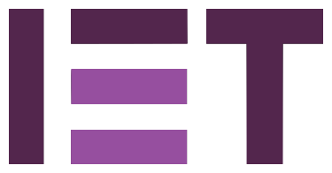

Operating at the intersection of design and engineering, I approach every project as a system optimization problem—seeking elegance in code and efficiency in performance. Currently upgrading my portfolio with Advanced AI Agentic Systems and Engineering Concepts.
Exploring the core disciplines of telecommunication engineering and modern computing technologies.
Studying the principles of modern wireless communication systems, including radio frequency design, modulation techniques, and the evolution towards next-generation mobile networks.
Applying digital signal processing techniques to analyze, filter, and transform signals. Focused on real-time processing and practical implementation in communication systems.
Combining software development skills with emerging AI technologies to build intelligent applications. Interested in AI-driven solutions for network optimization and automation.
Understanding network architectures, protocols, and infrastructure. Exploring how IoT and smart systems leverage telecommunications to connect devices at scale.
Building a strong foundation in telecommunications and engineering at KDU.
Practical exposure in engineering, technology, and leadership.
Showcasing my work in Telecommunications, Software, Electronics and AI.
Languages, tools, and technologies I work with.
Academic honours, competition results, and recognitions throughout my engineering journey.

Professional development and specialized courses in telecommunications, networking, and software.
Open to collaborations, opportunities, and engineering conversations.
Interested in collaboration, research projects, freelance position... Let's connect!
Send Email